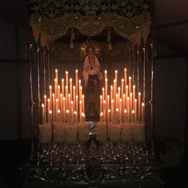

"Una devoción centenaria que late en el corazón de Santander."
La historia de la imagen de Ntra. Sra. de la Amargura (de quien procede nuestro nombre) se remonta al año 1909, cuando es bendecida e inicia su vida en la parroquia de los Padres Pasionistas del Barrio Maliaño. El martes 6 de abril de ese mismo año encontramos en El Diario Montañés la primera referencia en la prensa: "El día de Viernes Santo por la tarde a las cinco, dará principio la función con el piadoso ejercicio del Sermón, seguido de la imponente ceremonia del Descendimiento, en la que los cofrades de la Pasión harán uso del grande y conmovedor Crucifijo estrenado y bendecido el año pasado por nuestro Excelentísimo Prelado y dedicado ex profeso para tan compasivo y tierno acto. Una vez sea éste terminado saldrá la procesión por las calles del barrio de Maliaño, conduciendo el cuerpo santo del Señor y la imagen de la Virgen Dolorosa, obra excelente adquirida por la Cofradía de la Pasión y que estrenará ese mismo día. Ambas imágenes serán llevadas por los cofrades de la Pasión."
No está claro su paso a través de la Guerra Civil, existiendo dos tradiciones acerca de su destino. Por un lado, encontramos la versión popular, donde a través de testimonios de la época aseguran que la Virgen pasó la contienda escondida en una casa del barrio, por lo que en 1942 tan sólo se habría bendecido a la misma imagen una vez restaurada. Otra versión establece que la imagen fue destruida en el año 1936, elaborándose una nueva, ya acabada la guerra, en las Escuelas Salesianas de Sarrià, que fue bendecida en el año 1942. Sea como fuere, el culto continuó y siguió siendo pieza central de la parroquia del barrio y de su cofradía; en 1947 se inauguró la sección de nazarenos, que comenzaron a acompañar a la Virgen de la Amargura en sus procesiones. Ya ese mismo año hubo acompañamiento musical con algún tambor, germen de la actual Agrupación Musical. Las Madres Adoratrices de Santander elaboraron entre 1959 y 1960 el suntuoso manto negro que luce desde esa época. En 1975 se adquirió la carroza de plata labrada con faroles a juego, diseñada por Mariano Rubio Jiménez en 1964-65 para la Cofradía de la Pasión de Madrid en los Talleres de Santa Rufina de la misma ciudad.
Llegado el nuevo milenio, con la refundación de la ya veterana Banda de Cornetas y Tambores de la Pasión, ésta pasó a estar bajo la advocación de la Virgen de la Amargura, tomando su nombre. Se vinculaba la Banda así, de manera más estrecha, con la Virgen a la que siempre acompañó y regaló su música y su esfuerzo. En 2006, al transformarse la Banda en Agrupación Musical, se consumó el cambio. Desde entonces hemos tenido el orgullo de acompañarla en cada una de sus salidas procesionales como su Agrupación Musical hasta la Semana Santa de 2019. Los últimos tiempos han traído un nuevo esplendor para Ntra. Sra. de la Amargura. En el verano de 2017 la Archicofradía de la Pasión inauguró una capilla para la veneración de la imagen en el coro de la parroquia, consiguiendo, por fin, un lugar propio para la Virgen. A ello se ha sumado el estreno del espectacular palio en la Semana Santa de 2018, al mismo tiempo que se procesionaba, el día de Martes Santo, con el paso a hombros por primera vez en su historia. El día 20 de octubre de 2018, se celebró su coronación litúrgica; previamente, la Agrupación Musical ofreció un concierto de marchas procesionales en el salón de actos de la parroquia.

Hoy, su capilla en la Parroquia de los PP. Pasionistas es lugar de peregrinación y silencio, donde cada Martes Santo, a hombros de sus cargadores, la Virgen de la Amargura sale a las calles de Santander.